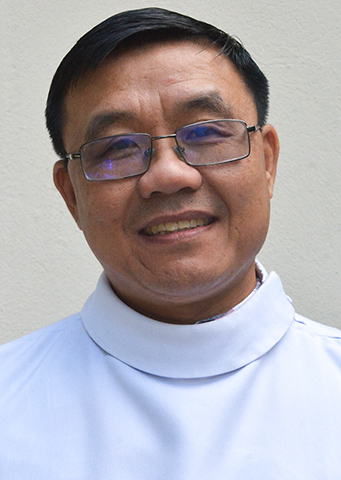
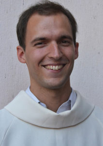

Szalézi rend
Szalézi szerzetesek
Szalézi szerzetesek
Szalézi szerzetesek tagjai
- P. Kővári László SDB, rendházigazgató
- Született: 1955. november 3.
- Első fogadalomtétel: 2016. szeptember 1.
- Örök fogadalom: 2020. szeptember 12.
- Pappá szentelés: 2021. május 24.

- P. Tran Dinh Biet Pál SDB
- A kazincbarcikai Szent József Rendház vikáriusa és a rendház ekonómusa.
- Született: 1974. október 13.
- ő fogadalomtétel: 2002. augusztus 15.
- Örök fogadalom: 2008. május 24.
- Pappá szentelés: 2013. április 01.
- Született: 1985. június 13.
- Első fogadalomtétel: 2007. szeptember 08.
- Örök fogadalom: 2013. augusztus 24.

- Tóth Péter Szalézi szerzetesnövendék
- Született: 1994. március 08.
- Első fogadalomtétel: 2015. szeptember 08.
- Örök fogadalom: 2021. július 16.
- Pappá szentelés: még nem történt meg

- P. Gnana Pragasam Derosi Raja SDB
- Született: 1982. augusztus 25.
- Első fogadalomtétel: 2001. május 24.
- Örök fogadalom: 2008. május 24.
- Pappá szentelés: 2014. augusztus 08.